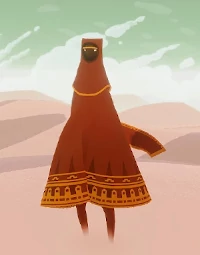
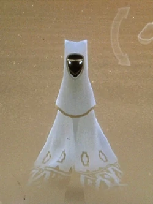
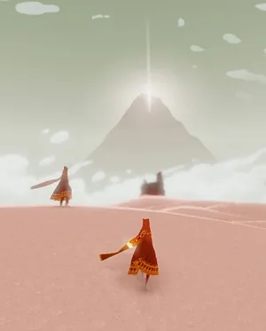

Sobre a Obra
Journey é um Art Game indie de aventura, onde exploramos um mundo antigo e cheio de mistérios, caminhando por ruínas em desertos, rumo ao topo da montanha que brilha tão intensamente.
O protagonista do jogo é um personagem no qual não temos informação alguma, coberto por um manto vermelho, e dono de um cachecol com propriedades místicas.
Trata-se de um jogo extremamente emocionante, uma jornada espiritual sobre a vida, acompanhada por uma linda trilha sonora e elementos visuais impressionantes, que fazem de Journey uma experiência única.
É, no geral, um jogo Single Player (1 único jogador), porém, durante a jornada, é possível encontrar companheiros online e viajar junto a eles.
Vencedor de diversos prêmios, aclamado pela crítica e amado por todos que já jogaram, Journey é uma verdadeira obra de arte, que todos devem um dia jogar.
Obra de Arte?
Journey é muito diferente da maioria dos jogos, não possuindo estado de derrota, limites de tempo ou conflito entre jogadores, e por possuir diversos elementos artísticos, muitos críticos defendem que Journey não é um jogo, e sim uma peça de arte interativa.
Este jogo foi um dos maiores revolucionários do gênero Art Game, um estilo de jogo que dá maior importância ao seu valor artístico e estético.
Journey busca, acima de tudo, nos transmitir emoções, desde alegria e paz, até medo e tristeza, conseguindo sempre nos fazer sentir aquilo que a história deseja.
A história da obra nos é contada sem utilizar nem mesmo uma única palavra, fazendo uso de elementos visuais para apresentar seu enredo, que propositalmente, abre espaço para que cada um interprete a sua maneira.
Estes elementos visuais, por si só, são magníficos, com cada cenário, cada cena, sendo lindos, tanto graficamente, quanto na forma que são apresentados.
As músicas e efeitos sonoros presentes no jogo são a la crème, a cereja no topo que completa esta obra de arte, maximizando a transmissão de emoções, assim como toda a incrível experiência que é Journey.
Para Mim
Journey é, sem dúvida alguma, um dos jogos que mais me marcou.
Em meio a tantos jogos frenéticos e cheios de ação, um jogo relaxante e pacífico se destacou dos demais, sendo até hoje algo único para mim.
Foi uma jornada emocionante, em que cada vez mais me encantava pela beleza presente no jogo e sua história, seu mundo.
Lembro-me de encontrar outro personagem igual a mim, acreditando que se tratava de uma IA do jogo, e foi uma grande surpresa quando, ao ler sobre o jogo depois de terminá-lo, vim a descobrir que na verdade, era outra pessoa que me acompanhou por quase toda minha caminhada.
Sempre que me encontro em momentos mais conturbados em minha vida, a vontade de jogar novamente Journey cresce em mim, buscando a tranquilidade que tal experiência me proporciona.
Thatgamecompany
A Thatgamecompany é uma desenvolvedora de jogos eletrônicos fundada nos Estados Unidos em 2006, por Jenova Chen e Kellee Santiago.
O estúdio tem como principal objetivo criar entretenimento interativo, que seja atemporal e que possa inspirar conexão humana mundo afora.
Suas obras são experiências que enriquecem quem as vê, sendo sempre acessíveis e artisticamente belas, tanto que seus trabalhos já foram apresentados em exposições e galerias por todo o planeta, até mesmo encontrando-se na coleção permanente de Smithsonian.
A empresa espera aumentar a gama de emoções possíveis no mundo dos videogames, buscando impressionar e emocionar a todos, independente de sua idade, cultura ou nacionalidade.
Através de colaboração, iteração, experimentação e perfeição, a Thatgamecompany utiliza uma abordagem única, para criar experiências especiais na indústria dos videogames.
Entre suas principais produções, podemos destacar Sky, Flower, Flow, e claro, Journey.